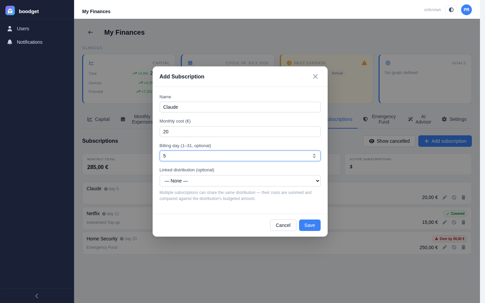
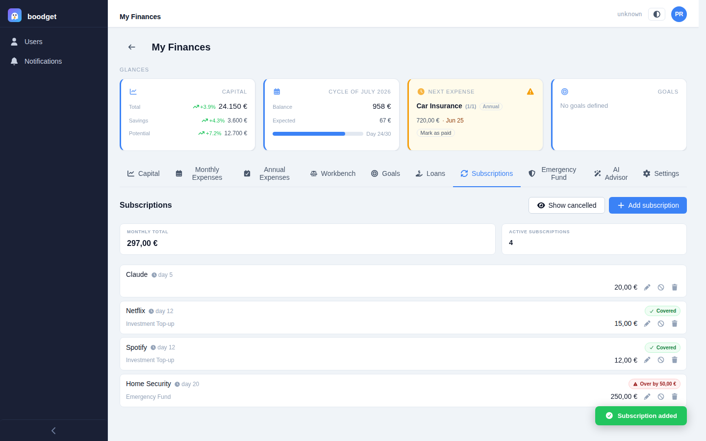
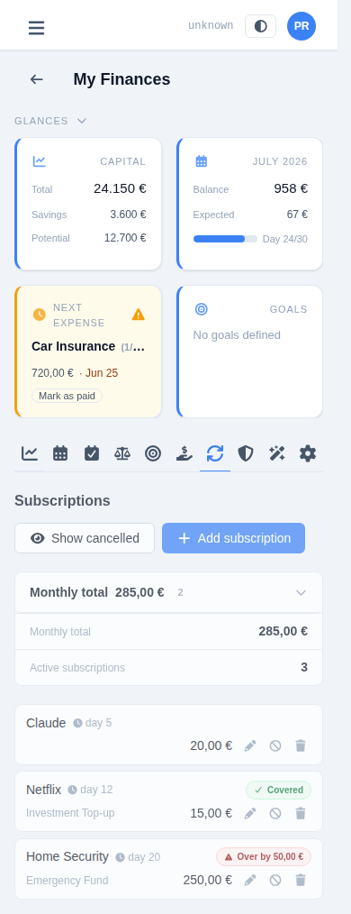
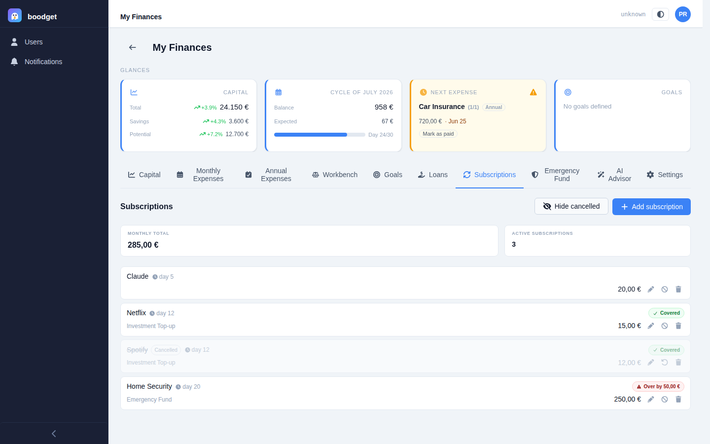

Tracking your Subscriptions
Streaming, software, memberships — the recurring costs you fund out of a distribution rather than budget for directly. Subscriptions give you visibility into the total, and an optional check against the distribution meant to cover it. This page walks through using it, step by step.
Give it a name and a monthly cost — subscriptions are monthly-only, no other billing cycles. A billing day is optional and purely informational (it only affects sort order — no cycle items, reminders, or Glances integration). Optionally link it to a distribution from your Monthly Expenses template; several subscriptions can share the same distribution, e.g. two subscriptions charged to one card funded by a single "Personal" distribution.

Subscriptions is a flat list — no detail page, every field and action visible right on the row, identical on mobile and desktop. A summary strip above it totals the monthly cost and count of active subscriptions only. Rows sort the same way Fixed expenses do: by billing day relative to your cycle start day, with no-billing-day rows last.


Every row linked to a distribution shows a pill next to it: green Covered when that distribution's budgeted value is enough for every active subscription linked to it combined, or red Over by €X when it isn't. This catches subscription creep against a fixed personal-spending budget before it becomes a surprise.

Cancel is the soft path — a cancelled subscription drops out of totals and coverage but stays in your history, hidden from the list by default behind a "Show cancelled" toggle, and can be reactivated at any time. Delete is a genuine, permanent removal, meant for outright mistakes rather than something you've simply stopped paying for.
